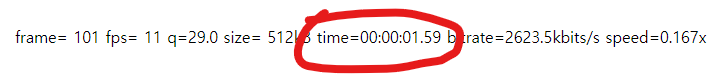
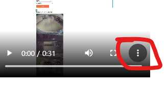

pc, mobile 크롬 브라우저에서만 동작합니다.(아이폰에서 테스트 안해봤어요)
select tesla dashcam (테슬라 녹화영상을 선택하시면 해당 녹화 시간을 영상에 찍어줍니다)
영상 변환 시간이 오래걸립니다. 영상이 로딩될때까지 기다려 주세요 (3분-4분 소요)
Upload a video
developer email : perpet99@gmail.com
일반적으로 아래 빨간 부분 시간이 1분이 되어야 완료가 됩니다.

변환이 완료된 후 아래처럼 빨간부분 아이콘을 클릭해서 다운받으세요.
